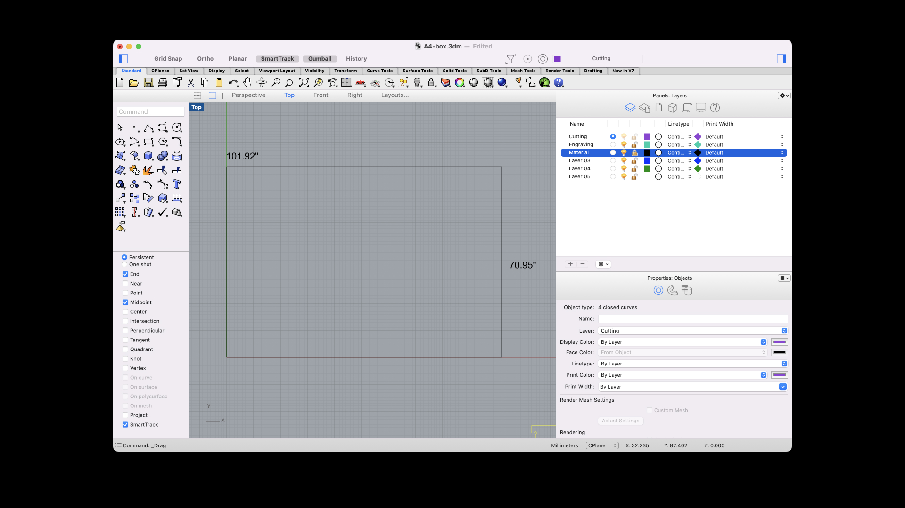
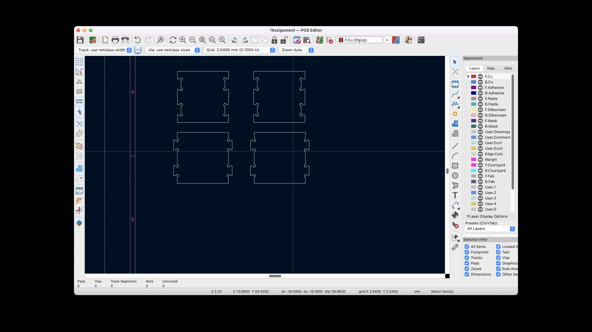

Part 1: Modifying meshes

Before you start, plug in your machine and download all the software.
Step 1: Design
Tools or software required: Rhino
1. I measured and wrote down the dimension of your material (height, width, and thickness). The dimensions of my material was 101.92mm x 70.95mm x 1.4mm.

2. I opened Rhino and created a bounding box that matched the height and depth of my material. I titled that layer “Material” and lock it once you are done.
3. In a separate layer titled “Cutting,” I used the "Rectangle" command to create the first panel. I created a 20mm square.
4. I used the "Rectangle" command again to create the “slots” in your box. I used the thickness of my copper material as the width of these slots so that the sides of my box fit together evenly without anything sticking out.
Step 2: Set up
The following documentation is a summary of the steps that are captured in much more detail in Junchao and Danli's "Fabrication prep for Bantam tool" guidelines.
1. I launched Kicad and imported my .dxf file and made sure the design matched the design in Rhino.
2. I plotted my design as a gerber file, plotting only "Edge.Cuts" and exported my design as a .gbr file.
Source files:
Big thanks to our TA Junchao for his patience and support during Office Hours.
Shout out to Akshay, Noelle, and the peeps on Discord for peer support and guidance.
Much love to Sara Cagle for being my on call emotional and tech support.